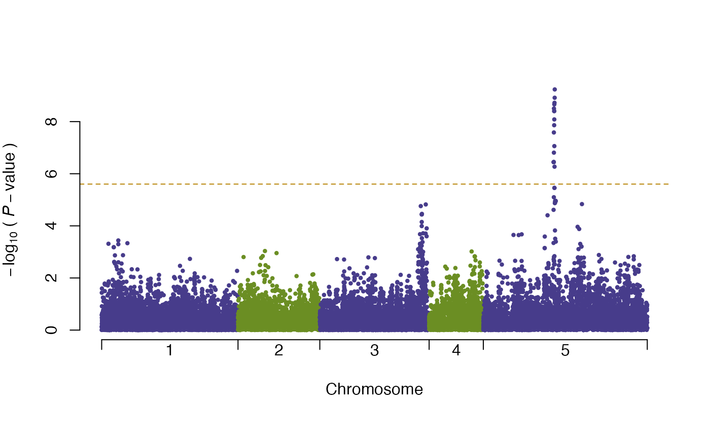
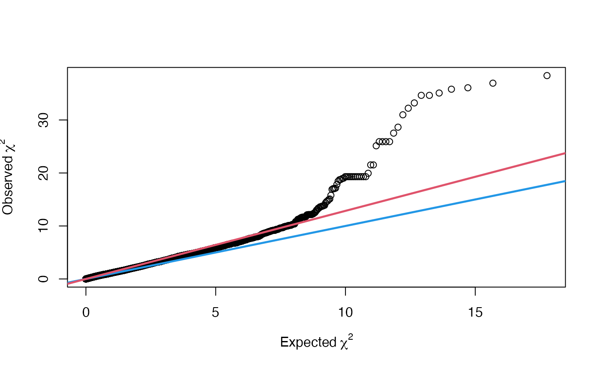
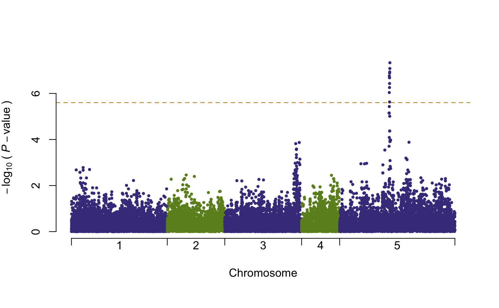

Variance Genome-wide association for using nonparametric variance test
Usage
vGWAS(phenotype, geno.matrix, kruskal.test = FALSE,
marker.map = NULL, chr.index = NULL, pB = TRUE)Arguments
- phenotype
a
numericorlogicalvector of the phenotyic values. See Examples.- geno.matrix
a
matrixordata.framewith individuals as rows and markers as columns. The marker genotypes for each marker are coded as one column. See Examples.- kruskal.test
a
logicalvalue specifying whether to use Kruskal-Wallis statistic. The default option isFALSE, i.e., the usual ANOVA statistic is used in place of Kruskal-Wallis statistic.- marker.map
a
numericvector giving the marker map positions for each chromosome. See Examples.- chr.index
a
numericvector giving the chromosome index for each marker. See Examples.- pB
show progress bar
Value
a data.frame containing columns of marker names,
chromosome indices, marker.map positions,
test statistic values, and p.value for each position.
References
Shen, X., Pettersson, M., Ronnegard, L. and Carlborg, O.
(2011): Inheritance beyond plain heritability:
variance-controlling genes in Arabidopsis thaliana.
PLoS Genetics, 8, e1002839.
Ronnegard, L., Shen, X. and Alam, M. (2010):
hglm: A Package for Fitting Hierarchical Generalized
Linear Models. The R Journal, 2(2), 20-28.
Examples
# \donttest{
# ----- load data ----- #
data(pheno)
data(geno)
data(chr)
data(map)
# ----- variance GWA scan ----- #
vgwa <- vGWAS(phenotype = pheno, geno.matrix = geno,
marker.map = map, chr.index = chr, pB = FALSE)
#>
# ----- visualize the scan ----- #
plot(vgwa)
#> nominal significance threshold with Bonferroni correction for 20000 tests are calculated.

summary(vgwa)
#> [1] Top 10 markers, sorted by p-value:
#> marker chr map Pval
#> 1 V16630 5 393135 0.0000000005831907
#> 2 V16627 5 392704 0.0000000012144397
#> 3 V16621 5 391781 0.0000000018983749
#> 4 V16614 5 390839 0.0000000021781079
#> 5 V16601 5 388736 0.0000000031525392
#> 6 V16609 5 390084 0.0000000039528039
#> 7 V16612 5 390492 0.0000000039528039
#> 8 V16613 5 390663 0.0000000082466233
#> 9 V16608 5 389975 0.0000000137787674
#> 10 V16598 5 388349 0.0000000261193103
# ----- calculate the variance explained by the strongest marker ----- #
vGWAS.variance(phenotype = pheno,
marker.genotype = geno[, vgwa[["p.value"]] == min(vgwa[["p.value"]])])
#> variance explained by the mean part of model:
#> 4.2 %
#> variance explained by the variance part of model:
#> 23.06 %
#> variance explained in total:
#> 27.26 %
#> $vm
#> C
#> 0.1026317
#>
#> $vv
#> C
#> 0.5628937
#>
#> $ve
#> C
#> 1.77584
#>
#> $vp
#> C
#> 2.441366
#>
# ----- genomic control ----- #
vgwa2 <- vGWAS.gc(vgwa)

plot(vgwa2)
#> nominal significance threshold with Bonferroni correction for 20000 tests are calculated.

summary(vgwa2)
#> [1] Top 10 markers, sorted by p-value:
#> marker chr map Pval
#> 1 V16630 5 393135 0.00000004639765
#> 2 V16627 5 392704 0.00000008241863
#> 3 V16621 5 391781 0.00000011695436
#> 4 V16614 5 390839 0.00000013025363
#> 5 V16601 5 388736 0.00000017402720
#> 6 V16609 5 390084 0.00000020778158
#> 7 V16612 5 390492 0.00000020778158
#> 8 V16613 5 390663 0.00000036976535
#> 9 V16608 5 389975 0.00000055296825
#> 10 V16598 5 388349 0.00000091305986
# }